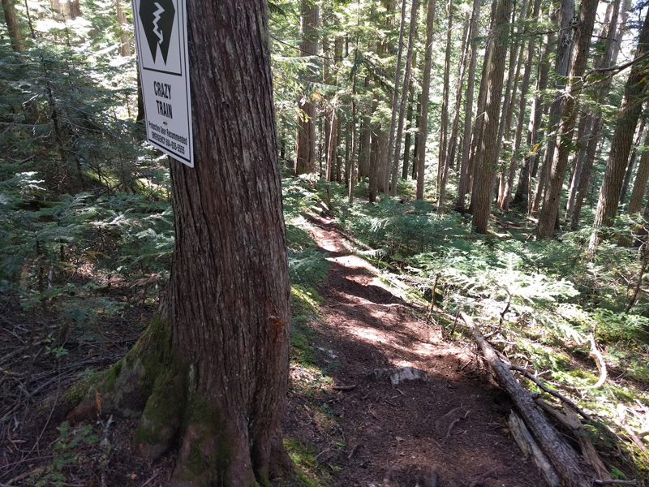
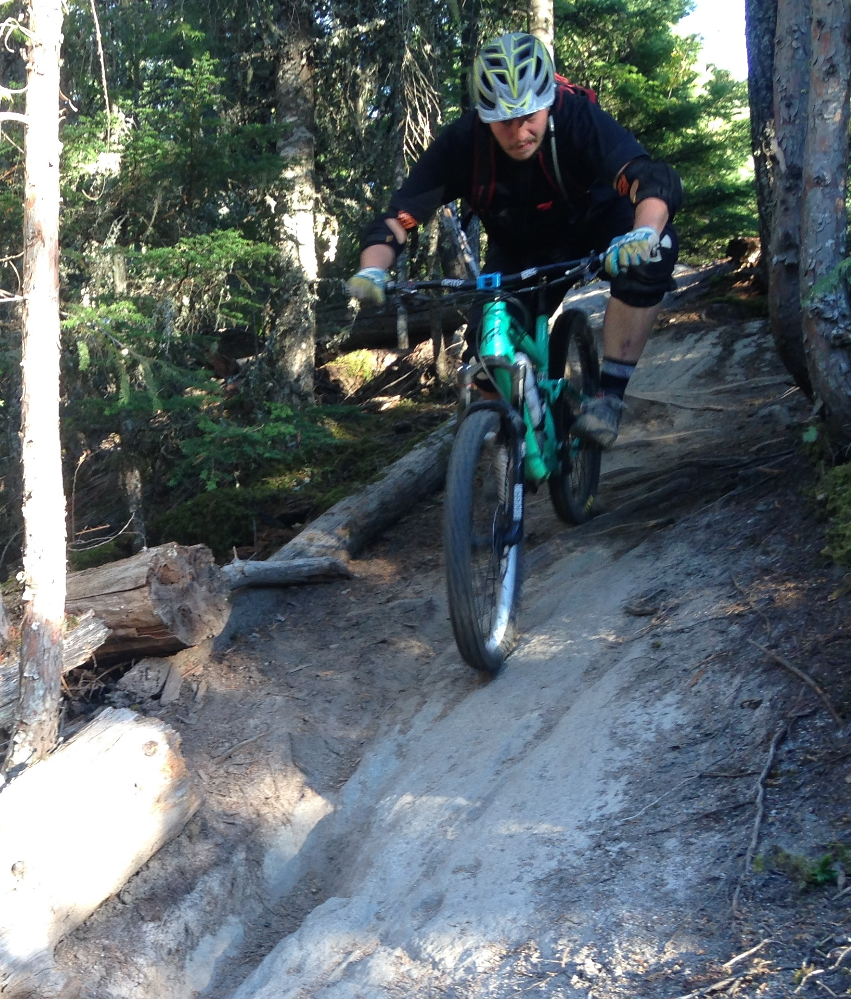

Disney World for mountain bikers, the best place on earth, we made it to Whistler!
Whistler base on Wednesday evening, day 12, when we first arrived in Whistler after riding the North Shore.
The drive from Vancouver to Whistler is gorgeous. There are steep snowcapped mountains and water of various shades of turquoise everywhere.
Home for a few days. We spent nights 12 and 13 in one of the Whistler parking lots.
Whistler is not a safe place for bikes. Do not leave a bike unattended anywhere. Ghost riding the DH bike to safe storage in the village.
Day 13 we pedaled from our camp spot up Blackcomb mountain to a trail called Microclimate. The brutal climb up the Blackcomb service road reminded us of some of the more grueling climbs back in Colorado. The views at the top and the trail back down made the climb absolutely worth it.

We scoped out Hey Bud and Crazy Tain on our way up but didn't ride them this time. The "7" in Hey Bud is representation of a “glottal stop" in the Squamish language. Road signs are written in English and Squamish around these parts.
Microclimate is a steep natural trail filled with off camber roots, steep chutes, rocky sections, and lots of flowy singletrack.
Can you spot the forest flyer?
True loam – soft, squishy, and super tacky.
Cheakamus views
Day 14 we pedaled up to It’s Business Time (Duncan’s Trail) at the Cheakamus Trail area in Whistler.
Business Time was full of more awesome rock slabs and steep chutes.
Steep and sticky, time to lay off the brakes.
Rocky and rooty but still fast and flowy.

The trail building in Whistler is unreal.
The rock is steep but also sticky which opens up a lot of possibilities. No wonder rock climbers love this area as well.
Golden hour. Spaghetti dinner in the parking lot afterwards was amazing.
The view from the top of Fitzsimmons lift. That is Whistler Peak in the background where the Top of the World trail starts.
The Garbanzo zone. Freight train. Jumping skills required.
Slabs and berms everywhere.
The bike park trails are similar to the valley trails but you can ride them again and again and again.
Our first few days in Whistler the weather was perfect, sunny but not hot. We also experienced Whistler in the wet. It rained 3 or 4 days in a row. Checkout the Top of the World video below to see some completely different trail conditions.
When in Canada...
HomeTopSquamish